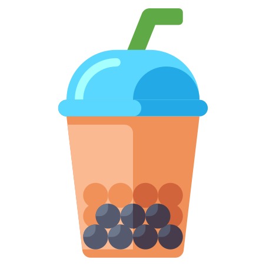
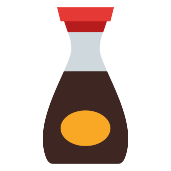

about
bio
Stephanie Isan (she/they) is a queer Taiwanese American writer and software engineer from the San Francisco bay area.
Her stories and poems are published and/or forthcoming in: The Bellevue Literary Review, jmww, and Frontier Poetry. She was a finalist for the Palette Poetry 2021 Prize and longlisted for the 2021 Frontier OPEN. She is a Kundiman fellow.
Stephanie is a fiction reader for Fractured Literary and an Assistant Poetry Editor at Barrelhouse Mag.
In her free time, she likes to, in no particular order: take long walks on air-conditioned treadmills at sunset, eat brunch with fancy mimosas, play video games, pet cats, dogspot, and drink sriracha straight from the bottle.
She currently lives with two cats, one beagle mix, and her husband in an Asian pear tree in the southwestern US.
credits
photo
Credit demanded by: husbando
site
Generated with: Material for mkdocs
icons
Yoinked from Icons8